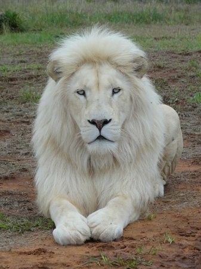
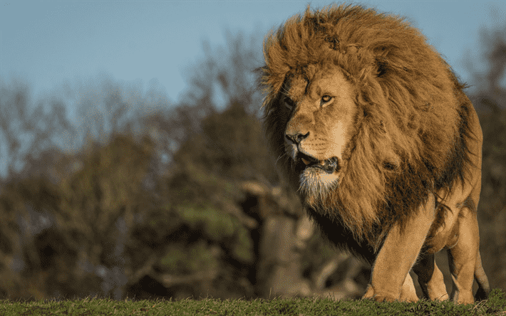
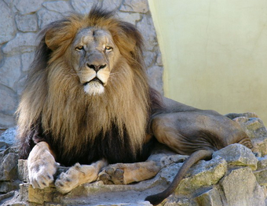
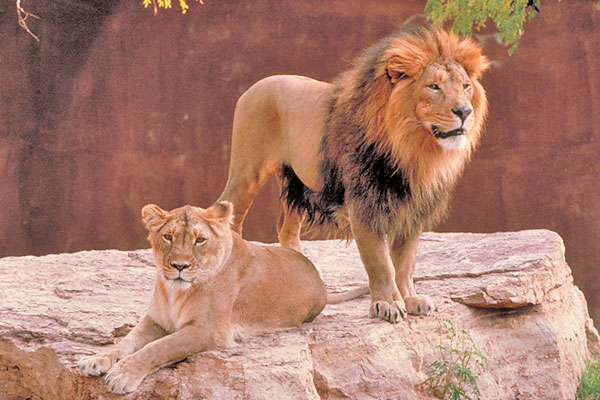

TIPOS DE LEONES
| NOMBRE |
CARACTERISTICAS |
IMAGEN |
| León blanco |
El leon blanco es una mutacion del leon africano, este leon se caracteriza por tener su pelaje blanco que
aparece debido a un gen recesivo. A pesar de su belleza son muy vulnerables en estado salvaje, ya que el color
claro es bastante dificil de camuflar en la sabana, ademas se encuentran en peligro de extincion.
Fuente:https://laverdadnoticias.com/ecologia/Leon-blanco-en-peligro-20190318-0088.html |
 |
| León de Barberia |
El leon de barberia, se dice que es el rey de reyes, debido a su porte, a su gran tamaño,
y a su fronosa y extensa melena que cubre gran parte de su cuerpo y lo hacer ver bastante imponente
e intimidamente, tambien se dice que es el tercer felino mas grande que existe. Este leon se diferencia
de los otros por el gran mechon que se forma al final de su cola, tambien por la forma de su craneo y
su estructura facial. lamentablemente se dice que esta especie de leon ya se extinguio para el siglo XIX.
Fuente:https://www.animales.website/leon-del-atlas |
 |
| León de Katanga |
Esta sub-especie ha sido una de las mas grandes, llegando a medir 290cm de largo y alcanzado los 280 kilos,
en cuanto a su apariencia destaca demasiado su color arena y su melena bastante tupida, en la cual se puede
encontrar una combinacion de colores entre el castaño y el cafe claro.
Fuente:https://www.expertoanimal.com/tipos-de-leones-nombres-y-caracteristicas-24431.html |
 |
| León asiático |
Este leon es un poco mas pequeño que otro tipo de leones, miden alrededor de 1,70 cm y llegan a pesar 190 kg, tambien posee un pelaje mas claro
con manchas rojisas en los machos, se encuentra fuera del territorio africano, y ademas este tipo de leon se encuentra en peligro de extincion
debido a la reduccion de su habitad y a la caza furtiva
Fuente:https://www.expertoanimal.com/tipos-de-leones-nombres-y-caracteristicas-24431.html |
 |